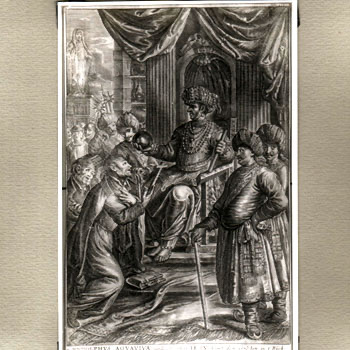

Isusovački blaženici
Svećenik
Bl. Rudolf Acquaviva
1550. – 1583.
Talijanski isusovac sudjelovao je u vjerskom dijalogu na Akbarovu dvoru, a potom vodio misiju u Indiji, gdje je ubijen s četvoricom drugova.
Tekst je preveden i prilagođen uz pomoć umjetne inteligencije.

Izvor slike
- Spomendan
- 4. veljače
- Zaštitništvo
- Nije navedeno u izvoru
- Životni vijek
- 1550. – 1583.
- Djelovanje
- Misije i evangelizacija · Mučeništvo · Dijalog i pomirenje
- Razdoblje
- 16. stoljeće
- Ulazak u Družbu
- 2. travnja 1568.
- Misija
- Goa, Akbarov dvor i Salsette
- Datum rođenja
- 25.10.1550.
- Mjesto rođenja
- Atri, Abruzzo, Italija
- Datum smrti
- 25.07.1583.
- Mjesto smrti/mučeništva
- Cuncolim, Salcete (Salsette), Goa, Indija
- Okolnosti smrti/mučeništva
- Ubijen u napadu na skupinu isusovačkih misionara kod Cuncolima.
- Uloga
- Svećenik
- Mučenik
- Da
- Ostale oznake
- Misionar na dvoru mogula Akbara; poglavar misije u Salceteu
- Pripadnost
- Isusovac
- Drugi oblici imena
- Rodolfo Acquaviva · Rodolfo
- Napomene uz podatke
- Za rođenje preuzet 25.10.1550. prema Katoličkoj crkvi u Norveškoj i isusovcima u Singapuru; stariji vatikanski martirologij navodi 02.10.1550.
Životopis
Rodolfo Acquaviva rođen je 1550. kao sin vojvode od Atrija. Otac mu je namijenio dvorsku službu koju je ostavio stric Claudio kada je postao isusovac. Rodolfo je, međutim, želio isti redovnički put. Nakon višemjesečnoga nagovaranja dobio je očev pristanak i 1568. pristupio Družbi. Studije su ga pripravile za indijske misije; zaređen je u Lisabonu 1578.
Papinski Germanicum čuva uspomenu na njegov rimski odgoj. Bio je subrat u novicijatu Stanislavu Kostki u kući svetoga Andrije na Kvirinalu. Od 1574. do 1577. boravio je u kolegiju kao repetitor fizike. Ondje je upoznao i Petra Berna, kasnijega druga u mučeništvu. Njihove su se životne putanje ponovno povezale u indijskim misijama, iako je Berno zbog dovršetka novicijata u Lisabonu stigao u Gou poslije njega.
U Goi je predavao filozofiju, a 1580. poslan je na Akbarov dvor u Fatehpur Sikri. Nakon tri godine vjerskih razgovora bez željenoga obraćenja vratio se na Salsette kao poglavar dvanaestorice isusovaca. Portugalski pohodi i rušenje hinduističkih svetišta ondje su pojačali neprijateljstvo. Tijekom planiranoga obilaska sela u Cuncolimu mu je zabranjen ulazak. Dok su misionari namjeravali postaviti križ i otići, napadnuti su. Acquaviva i četvorica drugova ubijeni su 25. srpnja 1583.
Goanski provincijal Roland Coelho u pismu atrijskom biskupu 2020. istaknuo je da se domet susreta s Akbarom ne može mjeriti samo neostvarenim obraćenjem. Vladar je prema kršćanima postupao dobrohotno i dopuštao gradnju crkava. Pismo svjedoči i o živoj lokalnoj uspomeni: u srpnju župnik Cuncolima poziva isusovačkoga provincijala na euharistijsko slavlje u spomen mučenika. Coelho tu baštinu povezuje s molitvom za mir i sklad među ljudima zemlje u kojoj je Acquaviva djelovao.
Tekst je preveden i prilagođen uz pomoć umjetne inteligencije.
Pročitaj više na izvornoj stranici ↗